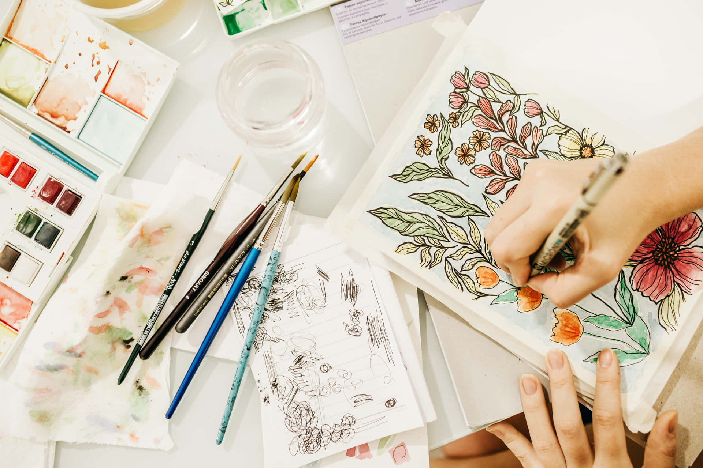

|  | DRAWING: Expressing my creativity through drawing and painting has been a lifelong passion that brings me immense joy and fulfillment. Exploring a variety of mediums, from graphite and watercolors to digital art, I find inspiration in capturing the beauty of the world around me and translating emotions onto canvas. This artistic journey allows me to continually develop my skills, experiment with different styles, and embrace the therapeutic nature of the creative process. Whether it's depicting vivid landscapes, illustrating imaginative concepts, or conveying emotions through portraiture, my interest in drawing and painting serves as a dynamic outlet for self-expression and a source of constant inspiration in my life. |
|---|---|
ASATRONOMY: Fascination with space has been a lifelong inspiration for me. Exploring the mysteries beyond our planet, from the vastness of galaxies to the intricacies of celestial bodies, fuels my curiosity. I delve into topics like astronomy, astrophysics, and space exploration, constantly seeking to expand my understanding of the cosmos. Whether stargazing, following space missions, or engaging in discussions on the potential for future space exploration, my interest in space serves as a constant reminder of the limitless possibilities that exist beyond our terrestrial boundaries. It inspires me to stay informed about the latest advancements in space science and technology, fostering a sense of wonder and appreciation for the grandeur of the universe. To know more click here |
|
COMMUNITY SERVICE: Engaging in community service at Kengari Public school has been a deeply rewarding experience, allowing me to contribute positively to the local education environment. Through teaching about health and highgine, I've had the privilege of supporting students, educators, and the school community. Whether participating in tutoring students, or organizing, my involvement in community service at the school reflects my commitment to fostering a supportive and enriching learning environment. This experience has not only strengthened my sense of social responsibility but has also provided valuable insights into the importance of education and community collaboration. |